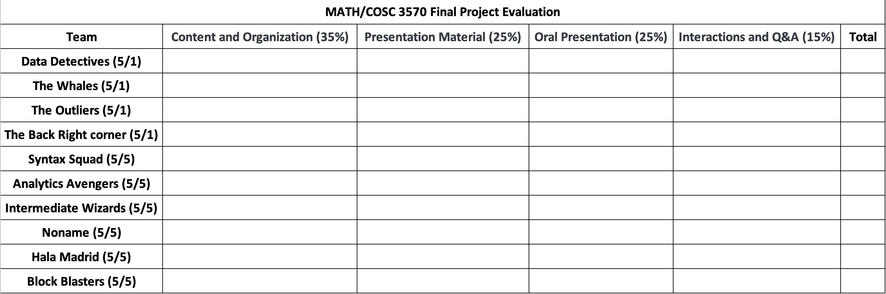
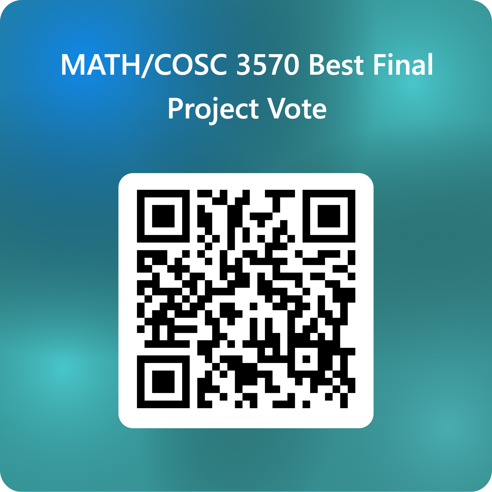
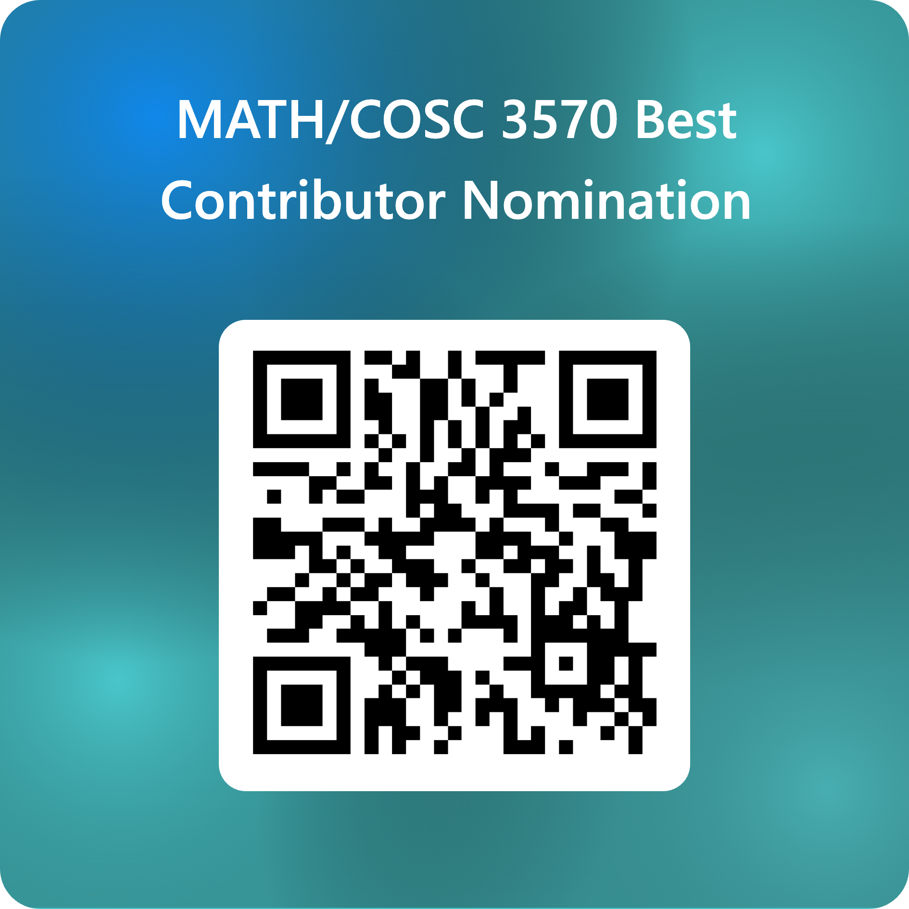

MATH/COSC 3570 Final Project Presentation
This is the latest version of project guideline. It may be revised later.
The final project is about new tools or data analysis. Show your fun project! Let’s go!! 😎
Timeline and Things to Do
Meeting. Schedule a meeting with Dr. Yu discussing your project. Please book a time slot in the Excel form. Starts on April 10, ends on April 30.
Proposal. Please send me a one-page PDF describing what you are going to do for your project (no word limit) with your project title by Friday, 4/25 11:59 PM.
Presentation. You will be presenting your project in class on Thursday, 5/1, 2 - 3:15 PM and Monday, 5/5, 10:30 AM - 12:30 PM.
Materials. Please share your entire work (slides, code, data, etc) by Monday, 5/5, 11:59 PM.
[Note]: 04/17 - 04/21 is Easter break. Be aware of time, and plan early!
Policy
Meeting
You lose 5 points of your project grade if you don’t meet the requirement or don’t meet with Dr. Yu at least once.
Please choose a meeting time in the Excel form.
You must let Dr. Yu know in advance if you need to change your meeting time.
You can change your meeting time once.
Briefly talk about your project idea.
Proposal
Each one of you loses 5 points of your project grade if you don’t meet the requirement or miss the deadline.
Your proposal (in PDF) should include three parts:
- Project title
- Members duty. For example,
- John and Ben: clean data; Mike and Emma: prepare slides; Sophia, Mike, and Ben: plotting, etc.
- The description of the data set you use in your project. For example, what is the data set about, how large is the data, the variables you use for your project, etc. The data set should be one of the data listed in ?@sec-data.
- The goal of your project. For example, what are questions you’d like to answer via data visualization? What would you like to learn about and from the data? What variables are you interested?
Although it is risky, you can change your project topic after you submit your proposal if you decide to do something else.
Presentation
Each one of you loses 5 points of your project grade if you don’t meet the presentation requirement.
Each group presentation is about 15 and 16 minute long, followed by about 1 to 2 minutes Q&A.
Four groups present on May 1, and six on May 5. Presentation order is decided by random sampling.
Every student has to participate (in-person) in the final presentation in order to pass the course.
Every group member has to present some part of the group work. The one who does not present receives no point.
Everyone is welcome to ask any questions about the projects. It helps everyone evaluate every group’s project and presentation performance. See Section 4 for grading policy.
Each group is required to ask as least one question.
- The \(k\)-th group should ask at least one question to the \((k+1)\)-th group in Q&A, \(k = 1, \dots, 9\).
- The last group to present will ask the first group questions about their project.
Materials
Each one of you loses 5 points of your project grade if you don’t meet the requirement or miss the deadline.
You need to share your entire work, including slides, code, etc so that anyone is able to reproduce your outputs and plots shown in the slides.
The code must be shared via a Quarto file.
Project Content
Your project can be either of the two categories:
Introduce one R or Python package never learned in class, or introduce some R or Python functions in our learned packages, but they are never discussed in class.
Data analysis including
- data visualization
- estimation/prediction using learned or new statistical or machine learning models
R/Python Packages
For your R/Python package project,
you need to
- show how and why the package greatly helps us do data science.
- explain how to use the functions in the packages by providing data science examples with some real data set.
- Please don’t use the toy examples in the package documentation.
If the functions of the package return any results or outputs, please explain them, teaching your audience how to appropriately read the outputs.
If the functions return graphics, explain why the visualizations are informative and useful for understanding data and analysis results.
You can choose a package that helps us do what we cannot do with the packages and tools learned in class.
- For example, we only learn
readrandreadxlpackages to help us import data files into R, and we don’t know how to extract data from a website. Thervestpackage helps us scrape data from web pages.
- For example, we only learn
If you choose a package that provides the same functionality as the packages we learned, please show the packages you choose are better.
- For example, its code is shorter, it is run faster, its output is more clear, its plot is prettier, etc. For example,
data.tablepackage provides a high-performance version of base R’sdata.framewith syntax and feature enhancements for ease of use, convenience and programming speed.
- For example, its code is shorter, it is run faster, its output is more clear, its plot is prettier, etc. For example,
Below are a list of popular R packages that you can start with.
Below are a list of popular Python packages that you can start with.
You can introduce other data science software or tools, such as Tableau, D3.js, KNIME, etc. Make sure you demo them with an understandable example.
Data Analysis
For your data analysis project,
You need to show that you are good at asking meaningful questions and answering them with results of data analysis.
Your presentation should include data visualization. Your graphics should be informative that help you
- explore relationships between variables in your data
- decide which statistical/machine learning model is used, so that your research questions can be properly answered.
You should discuss how and why statistical methods/machine learning algorithms are chosen for analyzing your data set.
- The methods we learn in class may not be appropriate for your data and answering your research questions. If this happens, critique your own methods and provide suggestions for improving your analysis. Any issues of your data, and appropriateness of the statistical analysis should be discussed.
You can choose a data set that is publicly available or you may collect your own data using a survey or by conducting an experiment. The dataset you choose cannot be any datasets used in class, including homework assignments and lab exercises.
Evaluation and Grading
Your project performance is evaluated by not only Dr. Yu and the TA but your classmates!
Your project grade will be
Project grade = performance grade - points lost due to violation of policy
with adjustement based on your performance of duty.
Group Performance Evaluation
Instructor Evaluation
Dr. Yu and the TA evaluate your group performance based on the four criteria
- Project Content and Organization
- Presentation Material (Slides) Quality
- Oral Presentation Skill and Delivery
- Interactions and Q&A
How do you get the full points for each category? Check the requirements below. Note that for Content and Organization, data analysis and package projects have different requirements.
Content and Organization (Data Analysis)
- Beautiful visualization helps find out relationship of variables and specification of models
- All questions are answered accurately by the models
- Discuss how and why the models are chosen
- Apply sophisticated models and detailed analysis
- All ideas are presented in logical order
Content and Organization (Packages)
- Show how and why the package greatly helps us do data science
- Explain how to use the functions in the package by providing concrete real data science applications and examples with data sets
- Teach audience with understandable examples of how to appropriately read the outputs and/or why the visualizations are informative and useful for understanding data and analysis results
- Show the package is better in some sense, its code is shorter, it is run faster, its output is more clear, its plot is prettier, etc
- All ideas are presented in logical order
Presentation Material Quality
- Presentation material show code and output beautifully
- Presentation material clearly aid the speaker in telling a coherent story
- All tables and graphics are informative and related to the topic and make it easier to understand
- Attractive design, layout, and neatness.
Oral Presentation Skill
- Good volume and energy
- Proper pace and diction
- Avoidance of distracting gestures
Interactions and Q&A
- Good eye contact with audience
- Excellent listening skills
- Answers audience questions with authority and accuracy
Peer Group Evaluation

Please go to the link or scan the QR code to vote your top 3 projects!
You choose your top 3 teams (Gold🥇, Silver🥈, Bronze🥉)
You cannot nominate your team as one of the top 3.
Mate Favorite Score (MFS) = \(🥇 \times 5 + 🥈 \times 3 + 🥉 \times 1\)
The team project grade is a combination of instructor evaluation scores and MFS.
- If you don’t participate, your team loses 2 points.
Peer Individual Performance Evaluation

Please go to the link or scan the QR code to nominate the best contributor!
In each team, two group members will win the best contribution reward that add extra points to the project grade.
Each one of you has two votes to nominate one or two of your teammates who you think contribute the most to your group project.
You can nominate
- two teammates, each receiving one vote.
- one teammate who receives two votes.
You cannot nominate yourself.
If you don’t vote, or you just use one vote, you can’t be the best contributor even if you receive the most or 2nd highest votes. The member with the 2nd or 3rd highest votes wins the best contribution reward.
If there are more than two group members receive top two number of votes, Dr. Yu and the TA will decide the final top two nominees. For example, if John receives the most votes, and Emma and Amy both receive the 2nd highest votes, Dr. Yu and the TA choose either Emma or Amy for the reward.